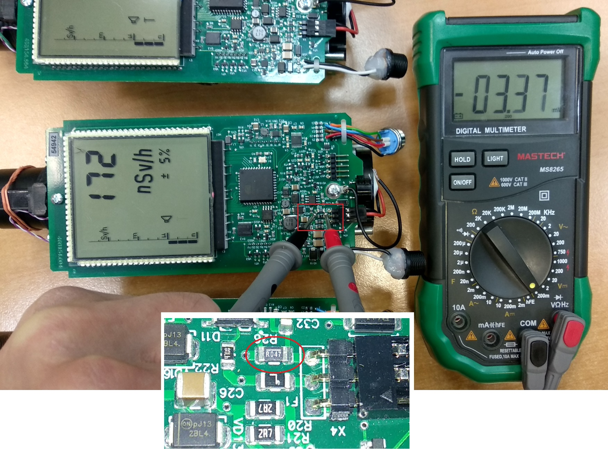
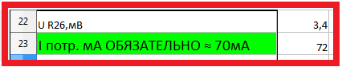
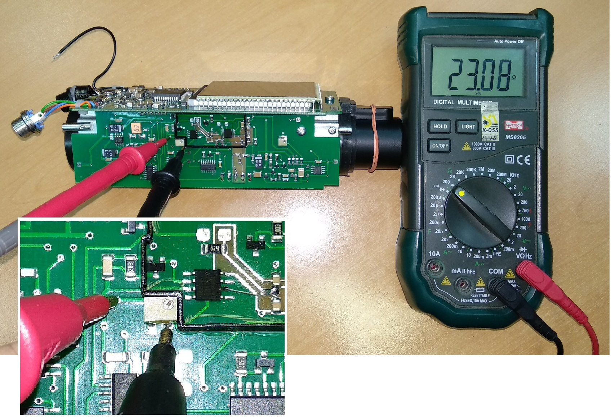
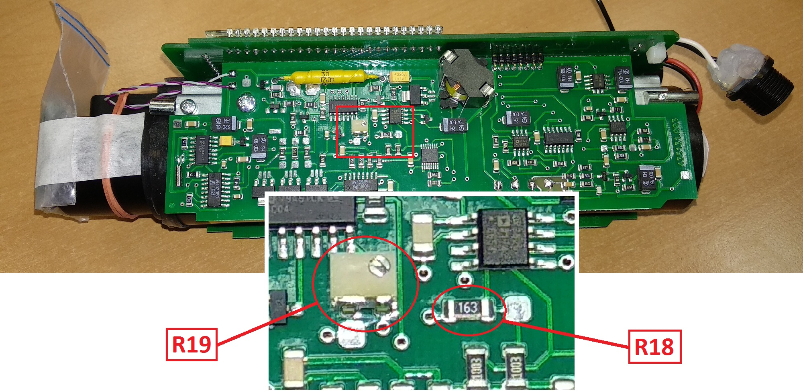
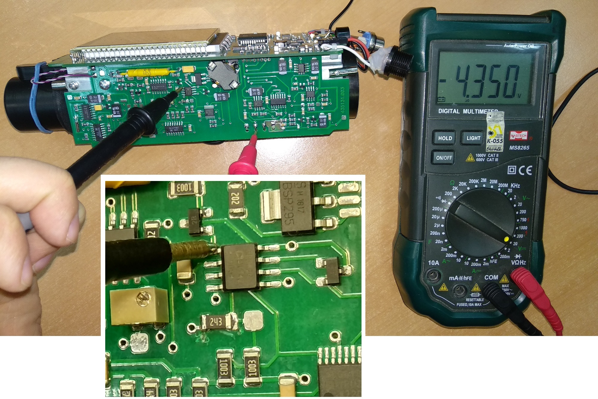
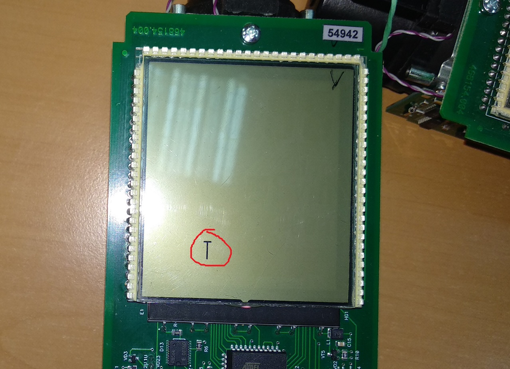
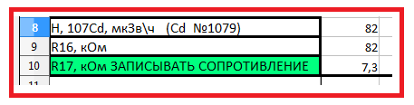
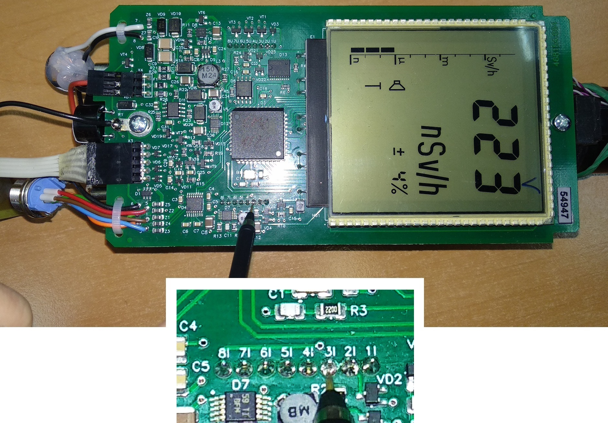
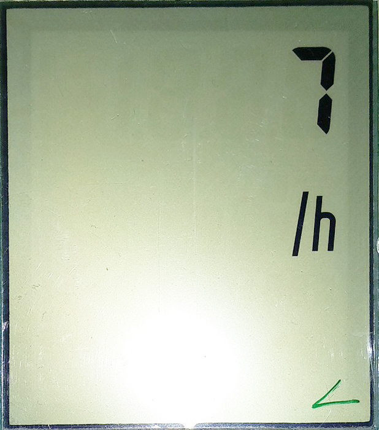

ДКС-АТ1123.
Инструкция по настройке
1. Присвоить номер. В перечень записать дату, количество дозиметров отданных
в настройку и ФИО регулировщика.
2. В полученные со сборки приборы вставить аккумуляторы, включить, подсоединить питание и поставить на приработку на 24 часа. Приработку производить в 3 диапазоне

3. Проверить ток потребления: для этого замерить напряжение на R26 (мВ) и вписать значение в базу настроек, база сама высчитает ток:
 4. Записать номер и дату изготовления в память прибора.
- Подключить дозиметр к адаптеру USB
- Запустить программу BackgroundCalibration. Дозиметр подключится автоматически
- Нажать "Запись идентификационных данных"
- Записать серийный номер, месяц и год производства


Если перед тем, как нажать "Запись..." НЕ выделять строку с прибором,
Background сам подставит сегодняшнюю дату
5. Перепроверить установленные коэффициенты:
- При включении нажать и удерживать кнопку
- Нажать три раза , на экране появится "---":
- Два раза нажать кнопку
- Набрать "718", для этого с помощью клавиш и выбирается цифра, а с помощью выбирается следующая позиция
- После ввода последней цифры, нажать
- Нажать и удерживать кнопку , появится ".1."
- Нажимая кнопку , выбрать пятый режим
- Переключение коэффициента осуществляется кнопкой , значение коэффициента изменяется кнопками и

Должны стоять такие коэффициенты:
| 1U | 1.0 |
| 2U | 1.0 |
| 3U | 1.0 |
| 4U | 0 |
| 5U | 0 |
6. Подстроечным резистором установить фоновые показания прибора. Для этого подстроечным резистором на плате преобразователя импульсов выставить 34 Ом.
7. Установить Uвыс резисторами R18, R19 на плате преобразователя напряжения по показаниям от ОСГИ 137Сs:
- Закрепить источник ОБЯЗАТЕЛЬНО латунной пластинкой к прибору

- Включить дозиметр
- С помощью подбора номинала резистора R18 (грубо) и регулировкой подстроечного резистора R19
(точно)
добиться показаний от источника 137Сs:
Ошибка загрузки Показания снимать прямо с экрана прибора (можно и с ПК через BackgroundCalibration, но смысл?).
- Проверить показания во втором диапазоне. Записать в базу настройку показания дозиметра в 1-м и 2-м диапазоне, сопротивление R18 и R19
8. Проконтролировать напряжение и форму пробоя светодиода в 1 и 3 диапазоне. Для этого:
- Включить прибор, перейти в 3-ий диапазон
- С помощью осциллографа проверить сигнал светодиода. Максимум не должен превышать 100В:
- То же сделать для 1-го диапазона
- С помощью мультиметра проверить напряжение на 1-ом выводе микросхемы D5. Напряжение не должно превышать 4.9В. 
- То же сделать для 1-го диапазона. Если напряжение на 1-м выводе превышает 4.9В, следует
заменить резистор R37 на больший номинал

- Значение напряжения диода и напряжение на микросхеме для 3-го и 1-го диапазона записать в базу настройки


9. Проверить отсутствие показаний прибора в непрерывном и импульсном режиме во 2 и 3 диапазоне
- Нажать и удерживать кнопку . На экране появится ".2."
- Нажать дважды , на экране появится ".4.", и сразу же символ режима работы: 
- с помощью клавиш и выбрать нужный режим, где:

- Нажать .
После проверки показаний в непрерывном и импульсном режиме, обязательно переключить прибор в непрерывный режим, вся настройка проводится именно в этом режиме
10. Проверить высокое
- Мультиметром замерить напряжение на высоком (в 1-м диапазоне)
- Записать в базу настройки в ячейку "Uвыс. I диап, В /дин" полученное напряжение
- В ячейке "Расчет" отобразится значение напряжения на высоком в 3-м диапазоне
- Переключится в 3-й диапазон и сравнить напряжение на высоком с расчетным
- Если напряжение примерно совпало, идём дальше, если нет — корректируем. Для этого необходимо подобрать резистор R43
- Записать в базу настройки напряжение высокого в 3-ем диапазоне
- Записать в базу настройки номинал резистора R43


11. Установить показания прибора от ОСГИ 109Сd 1079:

- Закрепить источник ОСГИ 109Сd 1079 на колпачок
- С помощью резистор R16 (грубо) и подстроечного R17 добиться такого значения мощности дозы:
- Чтобы увеличить значение м.д. сопротивление резистора нужно уменьшить, и наоборот
- Записать в базу настройки номиналы R16 и R17, значение м.д. от 109Сd 
Ошибка загрузки

Следует учитывать, что изменение сопротивления резисторов очень сильно изменяют значение мощности
дозы. Так, чтобы изменить значение мд на 20мкЗв, достаточно будет просто выкрутить подстроечный
резистор, без перепайки резистора
12. Осциллографом проконтролировать число импульсов сигнала «МВ» на фоне ≈10-15 имп.

13. Перепроверить показания по 137Сs и напряжение на D5.1 в 3
диапазоне на плате преобразователя напряжения (см. пункт 6 и 7).
14. Проверить время наработки — должно быть НЕ МЕНЕЕ 100 ЧАСОВ. Если меньше, включить в 3-й диапазон и поставить на стеллаж прирабатываться до 100 часов
Чтобы проверить часы наработки:
- Включить прибор, при включении зажать
- На экране появится:
- нажать , на экране появятся часы наработки. 
- Часов наработки должно быть НЕ МЕНЕЕ 100
- Если меньше, включить в 3-й диапазон и поставить на стеллаж прирабатываться до 100 часов

15. Зарядить и отдать на УДГ.
16. СРК-ЛУЭ
- При использовании ДКС-АТ1123 в составе СРК-ЛУЭ заменить R20 R21 с номинала 2,7 Ом на 12 Ом (ограничение по заряду≈100мА, дополнительных перепрошивок прибора НЕ ТРЕБУЕТСЯ)
- Если требуется изменить скорость и/или чётность обмена, то воспользоваться любыми ATerminal для БД с процессором ED2 (по списку требуемых команд более всего подходит терминал для БДКГ-22/23) изменив адрес (Prefix) на 61 (требуемые команды выбрать из списка)